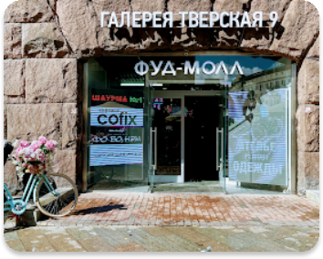
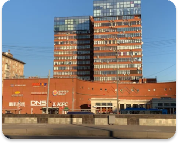

Тверская, 15

📍 ул. Тверская, 15
ТЦ «Галерея», 2 этаж
Кутузовский, 32

📍 Кутузовский пр-т, 32
Киоск у метро
Арбат, 45

📍 ул. Арбат, 45
Островок у кофейни
Я всегда любила вкусно поесть. Но бесило, что всё вкусное — вредное. А полезное — пресное и грустное. Почему нельзя сделать сладкое без чувства вины? Я пробовала пп-сладости из магазинов, но это было не то. Либо химия, либо невкусно. Тогда я решила попробовать сама.
Так появился SweetFit. Началось с маленького ларька и трёх видов боулов. Я сама резала фрукты, придумывала рецепты и тестировала на себе. Друзья сначала смеялись, а потом сами начали заказывать. Сейчас у нас несколько точек в Москве и своя доставка.
Мы используем только свежие фрукты. Никакого сахара, никакой химии. Каждое утро привозят партии клубники, манго, киви — я лично проверяю. Да, это сложнее, чем работать с заморозкой. Но я не для того начинала, чтобы делать как все.
И нет, это не унылая «диетическая» еда. Это честные десерты, которые я сама ем каждый день. Без сахара, без вины, с удовольствием. Я просто девушка, которой надоело выбирать между вкусом и пользой. Заходите, пробуйте. Вам понравится.

📍 ул. Тверская, 15
ТЦ «Галерея», 2 этаж
📍 Кутузовский пр-т, 32
Киоск у метро

📍 ул. Арбат, 45
Островок у кофейни